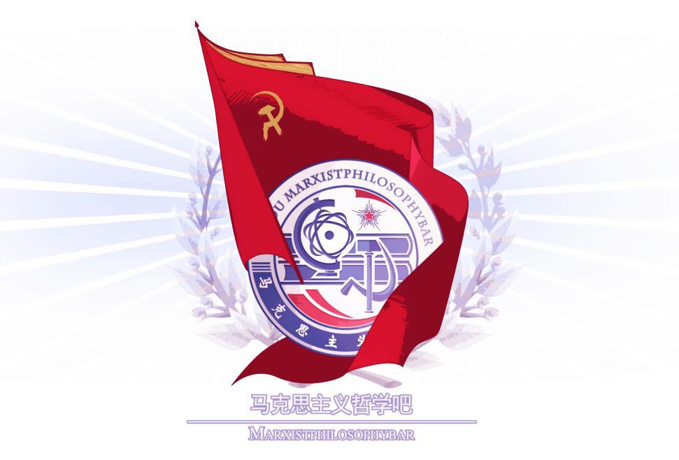

|  |
马列之声（Voice of Marx-Lenin）马列之声是对百度马克思主义哲学吧与苏联吧的管理员和活跃人物的代称。2015年8月23日创办《思宁报》。2016年3月1日，微信公众号“马列之声”成立。2019年“马列之声VOM”公众号被封，并在与其他左翼组织的宗派斗争中失败，吧主荣光隐退，今已名存实亡。偏向斯大林主义的毛派组织。曾与扎姆等人合作过视频系列《消费主义批判思想简史》。 |
共产主义学生报（第1期|第2期|第3期|第4期|第5期|第6期|第7期|第8期|第9期|第10期|第11期|第12期|第13期|第14期）
特色为托派翻案“三部曲”
认清托洛茨基的真面目
如何理解马克思说“我不是马克思主义者”？（2016年3月5日）
语录 | 我们应该如何谈论法律和维权（2016年3月19日）
语录 | 马克思恩格斯论资产阶级政治制度（2016年3月25日）
最纯粹的革命的遗产——毛泽东与格瓦拉（2016年3月25日）
语录 | 马克思恩格斯论社会主义社会的基本特征（2016年3月25日）
语录 | 马克思主义如何理解“爱国主义”？（2016年3月25日）
语录 | 经典作家论 国际主义&爱国主义 的关系（2016年3月25日）
语录 | 经典作家论坚持无产阶级国际主义，反对资产阶级民族主义（2016年3月25日）
列宁是一味“吹捧暴力”的法律虚无主义者吗？（2016年3月25日）
究竟应当如何理解“重新建立个人所有制”？（2016年3月25日）
抽象自由批判（L'Internationale，2016年10月16日）
对在“苏联解体”问题上的一种个人决定论倾向的批判（2016年3月25日）
最高指示：“要用生活的淡定去面对雾霾”（2016年3月25日）
语录 | 经典作家论马克思主义的无产阶级立场（2017年2月20日）